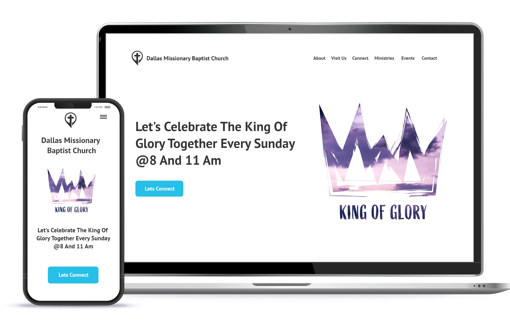

<!DOCTYPE html><html lang="en-us"><head><meta charset="UTF-8"><meta name="description" content="Assure Studios help churches grow and prosper with church digital marketing plans Call for a free consultation (972) 898-7128"><title>Assure Studios church digital marketing plans and strategies</title><meta name="viewport" content="width=device-width"><meta http-equiv="content-language" content="en-us"><!-- Google Tag Manager -->
<script>(function(w,d,s,l,i){w[l]=w[l]||[];w[l].push({'gtm.start':
new Date().getTime(),event:'gtm.js'});var f=d.getElementsByTagName(s)[0],
j=d.createElement(s), dl = l != 'dataLayer' ? '&l=' + l : '';j.async=true;j.src=
'https://www.googletagmanager.com/gtm.js?id='+i+dl;f.parentNode.insertBefore(j,f);
})(window,document,'script','dataLayer','GTM-NVKJP5L');</script>
<!-- End Google Tag Manager -->
<!-- Meta Pixel Code -->
<script>
!function(f,b,e,v,n,t,s)
{if(f.fbq)return;n=f.fbq=function(){n.callMethod?
n.callMethod.apply(n,arguments):n.queue.push(arguments)};
if(!f._fbq)f._fbq=n;n.push=n;n.loaded=!0;n.version='2.0';
n.queue=[];t=b.createElement(e);t.async=!0;
t.src=v;s=b.getElementsByTagName(e)[0];
s.parentNode.insertBefore(t,s)}(window, document,'script',
'https://connect.facebook.net/en_US/fbevents.js');
fbq('init', '223752926464522');
fbq('track', 'PageView');
</script>
<noscript></noscript>
<!-- End Meta Pixel Code --></head><link href="https://cdn.jsdelivr.net/npm/bootstrap@5.0.2/dist/css/bootstrap.min.css" rel="stylesheet" integrity="sha384-EVSTQN3/azprG1Anm3QDgpJLIm9Nao0Yz1ztcQTwFspd3yD65VohhpuuCOmLASjC" crossorigin="anonymous"><link rel="stylesheet" href="https://use.typekit.net/mtg4ahu.css"><link rel="stylesheet" href="./css/main1.css"><link rel="icon" type="image/png" href="images/favicon.png"><link rel="apple-touch-icon" sizes="180x180" href="/apple-touch-icon.png"><link rel="icon" type="image/png" sizes="32x32" href="/favicon-32x32.png"><link rel="icon" type="image/png" sizes="16x16" href="/favicon-16x16.png"><link rel="manifest" href="/site.webmanifest"></html><div class="overlay"></div><body id="church-digital-marketing"></body><!-- Google Tag Manager (noscript) -->
<noscript><iframe src="https://www.googletagmanager.com/ns.html?id=GTM-NVKJP5L"
height="0" width="0" style="display:none;visibility:hidden"></iframe></noscript>
<!-- End Google Tag Manager (noscript) --><header class="headerTop" id="header"><div class="logo"><a href="./"><span>Assure Studios</span></a></div><div class="mobile-menu-toggler"><svg viewbox="0 0 100 80" width="40" height="40"><rect width="100" height="4"></rect><rect y="30" width="100" height="4"></rect><rect y="60" width="100" height="4"></rect></svg></div><nav class="nav-bar"><div class="mobile-close"><span>x</span></div><div class="nav-link home-link"><a title="Home" href="./"> home</a><hr></div><div class="nav-link about-link"><a title="About Assure Studios" href="about.html">about</a><hr></div><div class="nav-link"><a title="Assure Studios portfolio" href="portfolio.html">portfolio</a><hr></div><div class="nav-link"><a title="Assure Studios blog" href="./blog/">blog</a><hr></div><div class="nav-link headerTel"><a href="tel:9728981728" title="Give us a call">phone: 972-898-7128</a><hr></div><div class="nav-link"><button class="header-button" onClick="location.href='./contact.html'" title="Free Consultation">Free Consultation</button></div></nav></header><div class="wrapper"><div class="section intro container-fluid"><div class="row align-items-center mb-5"><div class="col-xxl-2 d-none d-xl-block col-lg-12" data-aos="fade-left" data-aos-duration="1000"></div><div class="col-xxl-10 col-lg-12"><h1>church digital marketing</h1><h2>We provide simple marketing strategies that work, so you can focus on what you do best - running your church.</h2></div><div class="row mt-5"><div class="col-xxl-12"><p><span class="assureBold">Assure Studios &nbsp;</span>is a digital marketing company based out of Dallas Texas that loves working with churches.</p><p>We are here for you! When the life of a pastor becomes hectic and stressful, we want to be able provide assistance in order that your church may grow with an easy-to follow digital marketing strategy.</p><p>Assure Studios is based out of Dallas, Texas. Our Mission is to help small businesses and churches grow and prosper through Digital Marketing Strategies. We offer social media management, social media marketing, and web development.</p><p>Church digital marketing takes time and patience. Assure Studios create realistic smart goals and weekly reports. So that you know your money is not being wasted.</p></div></div><div class="container-fluid"><div class="row justify-content-between"><div class="col-12 content-section"><h2>Why Churches need Digital Marketing</h2><h3 class="fst-italic">Digital marketing helps churches reach out and engage with their community.</h3><p>In order for churches to effectively reach their congregation and local community, many are using digital marketing. Through church websites and social media platforms, Christians can easily share information about upcoming events, Bible study groups, and the overall life of the church. Additionally, church leaders can use digital marketing to connect with members who may be unable to attend services in person. By sending out regular newsletters or posting engaging videos online, churches can stay top of mind and nurture their relationships with congregants.</p><p>In a world that is increasingly online, church digital marketing provides an invaluable way for churches to reach out and engage with their community.</p></div><div class="col-12 content-section"><h2>WE OFFER other church services</h2><h3>Church SEO</h3><p>As the church continues to grow and evolve, so does its need for a stronger online presence. For many people, the church is their home away from home; a place where they can feel safe and loved. However, in order for the church to reach more people, it needs to be visible online. That's where SEO comes in. SEO, or Search Engine Optimization, is the process of making a church's website more visible in search engine results. By optimizing church websites for relevant keywords, churches can ensure that they appear higher in search results and attract more visitors.</p><p>In addition to making church websites more visible, SEO can also help churches to connect with their members and build relationships. By optimizing church websites for SEO, churches can reach more people and make a difference in their lives.</p></div><div class="col-12 content-section"><h3>Church Website Development</h3><p>When it comes to church web development, the most important thing is to create a site that reflects the church's brand and unique culture. Doing so will help to attract new members and keep existing ones engaged.</p><p>The church's website should be user-friendly and easy to navigate, with clear links to all of the church's essential information.</p><p>In addition, the site should prominently feature the church's mission statement, and values. By creating a church website that accurately reflects the church's brand and culture, you can help to ensure that the site is an effective tool for attracting new members and supporting existing ones.</p></div><div class="col-12 content-section"><h3>Church Reputation Management</h3><p>In today's world, church reputation is more important than ever. With the rise of social media, it's easier than ever for churchgoers to share their experiences with the world. That's why it's crucial for churches to have a church reputation manager.</p><p>A church reputation manager can help to ensure that all church communications are positive and professional. They can also help to monitor social media platforms for negative comments and take steps to address them.</p><p>Additionally, a church reputation manager can work with the church leadership to develop a plan for dealing with difficult situations. By enlisting the help of a church reputation manager, churches can take proactive steps to protect their reputations and ensure that they are seen in a positive light by their congregations.</p></div></div></div></div></div><div class="section container-fluid"><h2>The latest portfolio piece</h2><h2>Dallas Missionary Church Version Three</h2><p>A church's website is often the first point of contact between the church and a potential new member. In an age where social media is increasingly dominating the way we communicate, it's more important than ever for churches to have an online presence that is both beautiful and functional.</p><p>A mobile-friendly website that is easy to navigate and engaging is essential in today's landscape. At our company, we design church websites that are beautiful and easy to use, with a focus on engagement. We believe that interacting with potential new members through social media and other means is essential in order to grow a healthy church. Our goal is to help churches reach their full potential by providing them with a website that is both visually stunning and easy to use. Contact us today to learn more about our services!</p><p>To see the full mockup &nbsp;<a href="./portfolio/dallas-missionary-church-version-three.html">Dallas Missionary Church Version Three</a></p></div><div class="section container-fluid"><h2>The latest church blog post</h2><h3>Why does your church need a digital marketing strategy?</h3><p>Hello, im John Moore with assurestudios.com, and I am here to discuss your church developing a social media strategy. Developing your church’s social media strategy can be a daunting task so we are here to simplify things and point you in the right direction. first things first understand why you need a social media strategy.</p><a class="more-link" href="https://assurestudios.com/blog/how-to-create-a-winning-church-digital-marketing-strategy">Continue reading</a></div><div class="section container-fluid"><h2>The Faqs</h2><p>Top three questions about church digital marketing.</p><div class="row justify content-between"><div class="accordion accordion-flush" id="accordionFaq"><div class="accordion-item"><h3 class="accordion-header" id="faq-headingOne"><button class="accordion-button collapsed" type="button" data-bs-toggle="collapse" data-bs-target="#faq-collapseOne" aria-expanded="false" aria-controls="flush-collapseOne">Why do churches need digital marketing?</button></h3><div class="accordion-collapse collapse" id="faq-collapseOne" aria-labelledby="flush-headingOne" data-bs-parent="#accordionFlushExample"><div class="accordion-body"><p>church digital marketing is a new form of digital outreach that helps you differentiate your church from the other churches in your area</p></div></div></div><div class="accordion-item"><h3 class="accordion-header" id="faq-headingTwo"><button class="accordion-button collapsed" type="button" data-bs-toggle="collapse" data-bs-target="#faq-collapseTwo" aria-expanded="false" aria-controls="flush-collapseTwo">How to market a church a church?</button></h3><div class="accordion-collapse collapse" id="faq-collapseTwo" aria-labelledby="flush-headingTwo" data-bs-parent="#accordionFlushExample"><div class="accordion-body"><p>There are several ways to do marketing for a church.</p><p>Here are just a few.</p><ul><li>Your church website</li><li>Social media campaigns</li><li>Text Message campaigns</li><li>Email campaigns</li><li>Digital ads</li></ul></div></div></div><div class="accordion-item"><h3 class="accordion-header" id="faq-headingThree"><button class="accordion-button collapsed" type="button" data-bs-toggle="collapse" data-bs-target="#faq-collapseThree" aria-expanded="false" aria-controls="flush-collapseThree">What are some social media ideas for churches?</button></h3><div class="accordion-collapse collapse" id="faq-collapseThree" aria-labelledby="flush-headingThree" data-bs-parent="#accordionFlushExample"><div class="accordion-body"><h4>here are 22 Church Social Media Post Ideas</h4><h5>1&#8226; Recap an event</h5><p>Post the exciting highlights of an event that just occurred. Make people who missed the event kick themselves and prepare to catch the next one and make the people who attended the event remember how much fun or how life-changing the event was.</p><h5>2&#8226; Share Testimonies</h5><p>Testimonies are how churches can encourage and inspire by sharing stories that help us all relate to our own hills and valleys. These stories are what drive us and help us keep our faith. Simple testimonial posts can change lives.</p><h5>3&#8226; Highlight your volunteers</h5><p>We all love our volunteers so he would show them, and tell them why we love them so much. Maybe reward them with a gift or let people post a nice message about them in a post.</p><p class="mt-5">To read the entire blog post &nbsp<a href="https://assure-studios.blogspot.com/2022/03/22-church-social-media-post-ideas.html" title="22 Church Social Media Post Ideas">22 Church Social Media Post Ideas</a></p></div></div></div></div></div></div><a class="backToTop hide" id="backToTop" title="Go to top"><?xml version="1.0" encoding="UTF-8"?><svg id="a" xmlns="http://www.w3.org/2000/svg" viewBox="0 0 47 47"><defs><style>.b{fill:#fff;}.c{fill:#f85f51;stroke:#fff;stroke-miterlimit:10;}</style></defs><circle class="c" cx="23.5" cy="23.5" r="23"/><polygon class="b" points="24 14.33 14 30.67 34 30.67 24 14.33"/></svg></a><div class="callToAction" data-aos="fade-up" data-aos-duration="1000"><div class="container-fluid"><div class="row justify-content-around align-items-center"><div class="col-sm-12 col-lg-8 mb-3"><h2>Do Your Church Need A Free Consultation?</h2><p>We would love to hear more about how we can help your church grow with church digital marketing! Please schedule a free consultation with us so that we can learn more about your church needs.</p></div><div class="col-sm-12 col-lg-3"><button class="chatBtn assure-button" onClick="location.href='./contact.html'">Please Contact Us</button></div></div></div></div></div><footer class="footer"><div class="container"><div class="row justify-content-between"><link href="//cdn-images.mailchimp.com/embedcode/slim-10_7_dtp.css" rel="stylesheet" type="text/css"><style type="text/css"></style><div id="mc_embed_signup"><form class="validate" id="mc-embedded-subscribe-form" action="https://assurestudios.us9.list-manage.com/subscribe/post?u=8350d94f5f6838b1419783e02&amp;id=b398063b79" method="post" name="mc-embedded-subscribe-form" target="_blank" novalidate=""><div id="mc_embed_signup_scroll"><div class="container-fluid"><label for="mce-EMAIL">Subscribe To Our Newsletter</label><p class="mb-5">Lets talk about web design, development, digital marketing and search engine optimization.</p><div class="row mb-5"><div class="col-xl-9"><input class="email" id="mce-EMAIL" type="email" value="" name="EMAIL" placeholder="email address" required=""></div><div class="col-xl-3"><input class="button assure-button newsletter-signup" id="mc-embedded-subscribe" type="submit" value="Subscribe" name="subscribe"></div></div></div><!-- real people should not fill this in and expect good things - do not remove this or risk form bot signups--><div style="position: absolute; left: -5000px;" aria-hidden="true"><input type="text" name="b_8350d94f5f6838b1419783e02_b398063b79" tabindex="-1" value=""></div><div class="optionalParent"><div class="clear foot"></div></div></div></form></div></div><hr><div class="social"><a class="social" href="https://www.facebook.com/assurestudios">Facebook</a><a class="social" href="https://twitter.com/assurestudios">Twitter</a><a class="social" href="https://www.instagram.com/assure_studios/">Instagram</a></div><div class="copyright"><a href="./privacy-policy.html">Privacy Policy</a><a href="./terms-and-conditions.html">Terms and Conditions</a><p>© copyright 2022 by Assure Studios</p></div></div></footer><link href="https://unpkg.com/aos@2.3.1/dist/aos.css" rel="stylesheet"><script src="./js/main.js"></script><script src="https://cdn.jsdelivr.net/npm/bootstrap@5.0.2/dist/js/bootstrap.bundle.min.js" integrity="sha384-MrcW6ZMFYlzcLA8Nl+NtUVF0sA7MsXsP1UyJoMp4YLEuNSfAP+JcXn/tWtIaxVXM" crossorigin="anonymous"></script><script src="https://unpkg.com/aos@2.3.1/dist/aos.js"></script><script>AOS.init();</script>